Toads logos
Every class, role and rank toad comes twice: a standalone toad on a transparent background, and a badge, the toad in the bronze ring with its name underneath. Class badges use the WoW class colour. Ten variants and two pond logos below. Each file is a standalone SVG of original artwork.
A toad per class
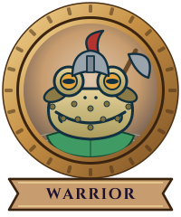
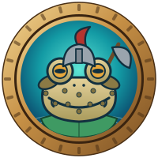
Warrior
Steel helm with a red plume, axe over the shoulder.
classes/warrior.svgclasses/warrior-badge.svg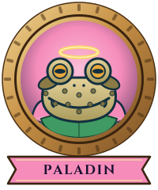
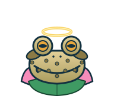
Paladin
Pink cape and a golden halo.
classes/paladin.svgclasses/paladin-badge.svg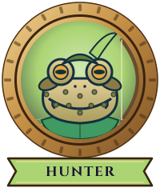
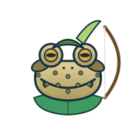
Hunter
Feathered cap, bow at the ready.
classes/hunter.svgclasses/hunter-badge.svg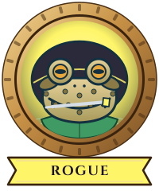
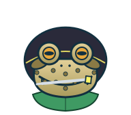
Rogue
Dark hood, a dagger between the teeth.
classes/rogue.svgclasses/rogue-badge.svg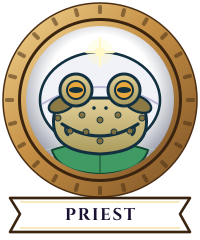
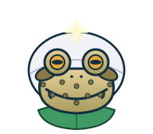
Priest
White cowl and a mote of light.
classes/priest.svgclasses/priest-badge.svg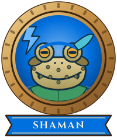
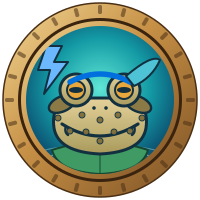
Shaman
Feathered headband and a lightning bolt.
classes/shaman.svgclasses/shaman-badge.svg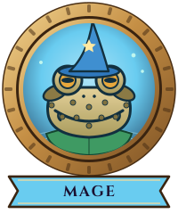
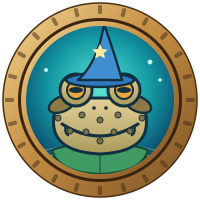
Mage
Pointed hat, a star and a few sparks.
classes/mage.svgclasses/mage-badge.svg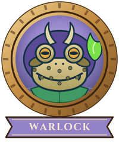
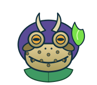
Warlock
Horns and a wisp of fel fire.
classes/warlock.svgclasses/warlock-badge.svg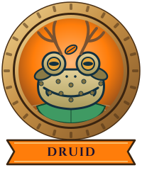
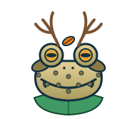
Druid
Antlers and an autumn leaf.
classes/druid.svgclasses/druid-badge.svg
A toad per role
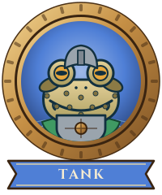
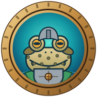
Tank
Brow helm and a shield held up front.
roles/tank.svgroles/tank-badge.svg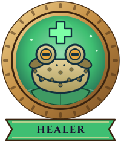
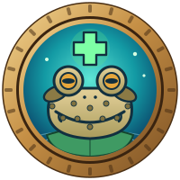
Healer
A glowing cross over a calm face.
roles/healer.svgroles/healer-badge.svg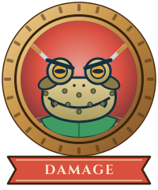
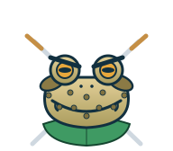
Damage
Crossed blades and a furrowed brow.
roles/damage.svgroles/damage-badge.svg
Officers and the Archtoad
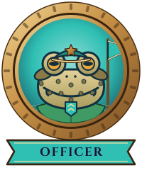
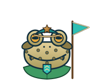
Officer
Peaked cap, chevron medal and the guild pennant.
ranks/officer.svgranks/officer-badge.svg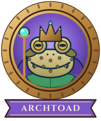
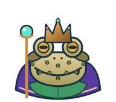
Archtoad
Crown, royal cape and the sceptre. Guild master and leader.
ranks/archtoad.svgranks/archtoad-badge.svg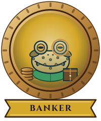
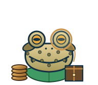
Banker
Monocle, a stack of coins and the ledger. Keeper of the guild bank.
ranks/banker.svgranks/banker-badge.svg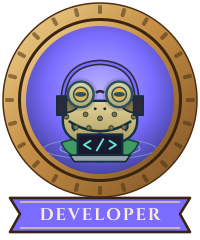
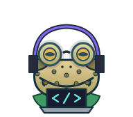
Developer
Headphones, glasses and a laptop. Builds and keeps the hub.
ranks/developer.svgranks/developer-badge.svg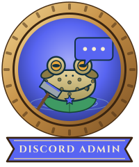
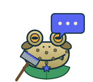
Discord Admin
Keeps the Discord server in order: speech bubble, ban hammer and the server star.
ranks/discord-admin.svgranks/discord-admin-badge.svg
Milestones and history
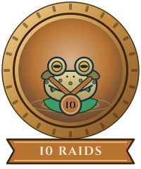
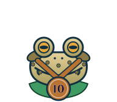
10 Raids
Turned up for 10 raids.
milestones/raids-10.svgmilestones/raids-10-badge.svg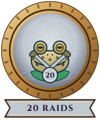
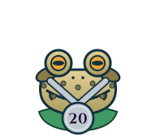
20 Raids
Turned up for 20 raids.
milestones/raids-20.svgmilestones/raids-20-badge.svg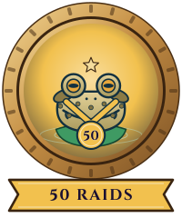
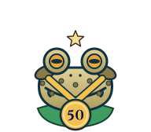
50 Raids
Turned up for 50 raids.
milestones/raids-50.svgmilestones/raids-50-badge.svg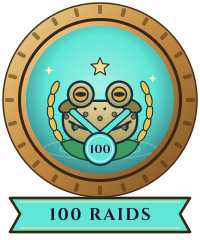
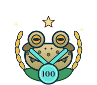
100 Raids
Turned up for 100 raids. A pillar of the pond.
milestones/raids-100.svgmilestones/raids-100-badge.svg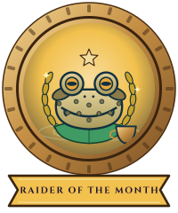
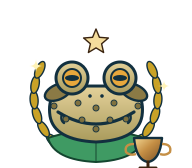
Raider of the Month
Named the guild’s raider of the month.
milestones/raider-of-the-month.svgmilestones/raider-of-the-month-badge.svg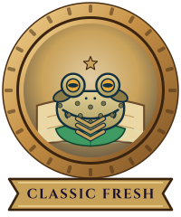
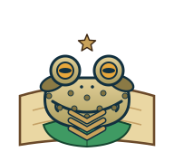
Classic Fresh
Raided with us in Classic Fresh.
milestones/veteran-fresh.svgmilestones/veteran-fresh-badge.svg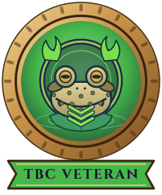
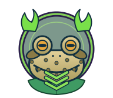
TBC Veteran
Raided with us in The Burning Crusade.
milestones/veteran-tbc.svgmilestones/veteran-tbc-badge.svg
Achievements
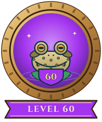
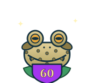
Level 60
Hit the level cap in Classic.
badges/level-60.svgbadges/level-60-badge.svgSixty Alt
Took a second character to 60. Huge.
badges/alt-60.svgbadges/alt-60-badge.svgLevel 70
Hit the level cap in The Burning Crusade.
badges/level-70.svgbadges/level-70-badge.svgEpic Mount
Bought the 100% mount.
badges/epic-mount.svgbadges/epic-mount-badge.svgTaking Flight
Earned a flying mount.
badges/flying-mount.svgbadges/flying-mount-badge.svgDungeon Set
Pieced together a dungeon set.
badges/dungeon-set.svgbadges/dungeon-set-badge.svgFull Tier
Completed a raid tier set.
badges/full-tier.svgbadges/full-tier-badge.svgLegendary
Got a legendary drop.
badges/legendary.svgbadges/legendary-badge.svgMaster Crafter
Maxed a crafting profession.
badges/master-crafter.svgbadges/master-crafter-badge.svgMaster Angler
Fished to 300.
badges/master-angler.svgbadges/master-angler-badge.svgChef
Cooked to 300.
badges/chef.svgbadges/chef-badge.svg1,000 Gold
Saved a thousand gold.
badges/thousand-gold.svgbadges/thousand-gold-badge.svgRank 10
Climbed to honor rank 10.
badges/pvp-rank-10.svgbadges/pvp-rank-10-badge.svgRank 14
Reached the top of the honor ladder.
badges/pvp-rank-14.svgbadges/pvp-rank-14-badge.svgFlag Runner
Carried the flag home.
badges/flag-runner.svgbadges/flag-runner-badge.svgTarren Mill
Fought the Hillsbrad grudge match.
badges/tarren-mill.svgbadges/tarren-mill-badge.svgScarab Lord
Rang the gong and opened the gates.
badges/scarab-lord.svgbadges/scarab-lord-badge.svgDragonslayer
Brought down the black dragon in her lair.
badges/dragonslayer.svgbadges/dragonslayer-badge.svgFirelord
Put out the fire in Molten Core.
badges/firelord.svgbadges/firelord-badge.svgBlackwing Down
Cleared Blackwing Lair.
badges/blackwing-down.svgbadges/blackwing-down-badge.svgC’Thun Down
Looked the Old God in the eye and won.
badges/cthun-down.svgbadges/cthun-down-badge.svgLich Slayer
Broke the Lich King’s lieutenant in Naxxramas.
badges/lich-slayer.svgbadges/lich-slayer-badge.svgSerpentshrine
Cleared Serpentshrine Cavern.
badges/serpent-slayer.svgbadges/serpent-slayer-badge.svgIllidan Down
Was not prepared. Was prepared.
badges/illidan-down.svgbadges/illidan-down-badge.svgAttuned
Earned the key to the tower.
badges/attuned.svgbadges/attuned-badge.svgWipe Veteran
Wiped, ran back and tried again.
badges/wipe-veteran.svgbadges/wipe-veteran-badge.svgAlways Flasked
Never raided without a flask.
badges/always-flasked.svgbadges/always-flasked-badge.svgGenerous
Gave to the guild bank.
badges/generous.svgbadges/generous-badge.svgPond Builder
Brought a friend to the pond.
badges/pond-builder.svgbadges/pond-builder-badge.svgVoice Regular
Always on voice chat.
badges/voice-regular.svgbadges/voice-regular-badge.svgHardcore
Survived hardcore.
badges/hardcore.svgbadges/hardcore-badge.svgExalted
Exalted with a faction.
badges/exalted.svgbadges/exalted-badge.svg
Ten toads
The Regular
Front-on portrait, warty and wide-mouthed. The current mark, refined.
01-the-regular.svgPad Sitter
Side profile, hunched on its lily pad.
02-pad-sitter.svgToad King
The regular, wearing a small bronze crown.
03-toad-king.svgAerial
Seen from above on the pad, legs splayed.
04-aerial.svgCroak
Vocal sac swollen, calling across the pond.
05-croak.svgMoonlit
Silhouette against a full moon, between the reeds.
06-moonlit.svgFirefly
Tongue out after a firefly.
07-firefly.svgHeraldic
Seated full-figure, symmetrical, between two cattails.
08-heraldic.svgMonoline
One cream line on the teal. Works small and in one colour.
09-monoline.svgSurfacing
Only the eyes and brow above the water.
10-surfacing.svg
The pond
Pond medallion
Five toads from the variants sharing one pond, in the same ring.
pond-medallion.svgPond banner
A wide pond for headers and social images.
pond-banner.svg